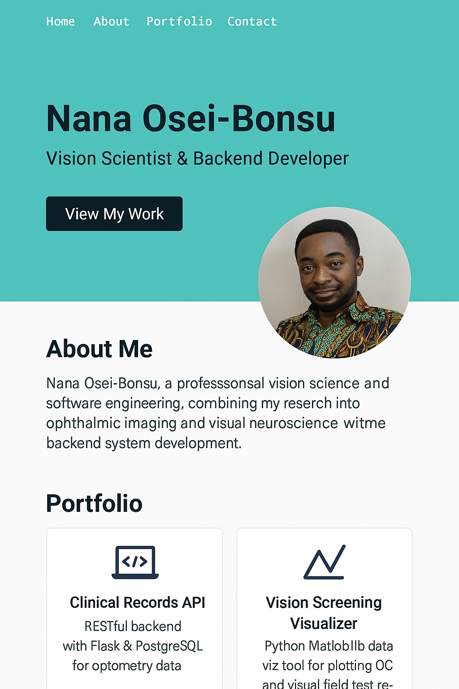

Optosol iDigital
A Python-based assistive technology combining OCR and text-to-speech to help low-vision students read printed materials. Features real-time processing with camera input and adjustable reading speed.
Key Features:
- Real-time document scanning
- Customizable voice output
- Text highlighting for partial vision

Clinical Records API
RESTful backend with Flask & PostgreSQL for optometry data
Key Features:
- Designed modular endpoints for recording visual acuity, OCT results, and patient histories
- Implemented JWT-based authentication for secure user access and patient data protection
- nables efficient integration with frontend apps for optometric workflow automation
- Built with scalability in mind to support vision clinics and research settings

Vision Screening Visualizer
Interactive Python tool for plotting OCT and visual field test results using Matplotlib
Key Features:
- Built for optometrists and researchers to visualize and analyze vision screening data in real time
- Supports structured plots of Optical Coherence Tomography (OCT) outputs and visual field test metrics
- Integrates with document scanners and includes:
- 🧾 Real-time scan processing
- 🗣️ Customizable voice feedback for accessibility
- 🟨 On-screen text highlighting for low vision users

Portfolio
Responsive, professional portfolio built with HTML, CSS, and Bootstrap showcasing my journey as a Vision Scientist and Backend Developer
Key Features:
- Features dedicated sections for About, Projects, Skills, and Contact
- Embedded elevator pitch, downloadable CV, and GitHub/LinkedIn integration
- Clean, accessible design optimized for mobile and desktop